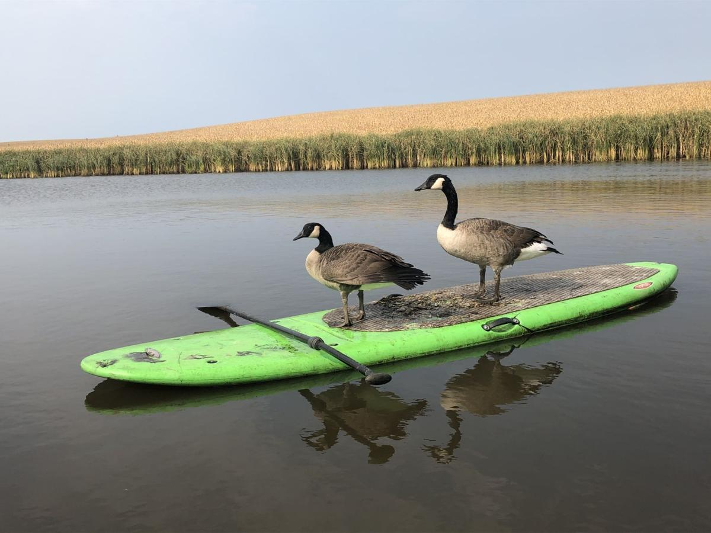
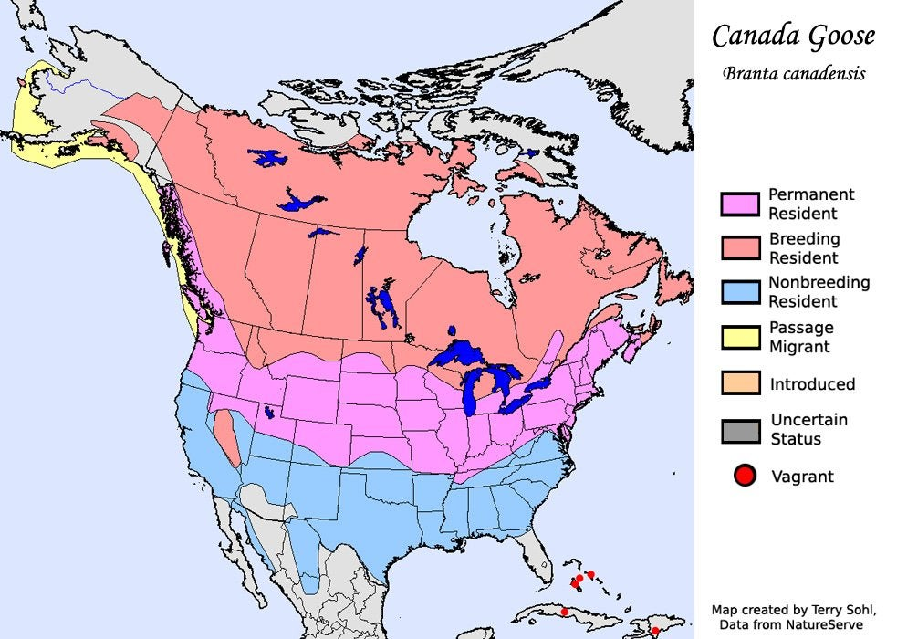

Goose Remastered
NOW WITH CSS!!!!
Goose index
How to tame goose
Why goose is best pet
Where are goose found
Goose pics
Goose can be found all over the world and they tend to live in peoples lakes and ponds. they may also be found in marshes and swamps 
